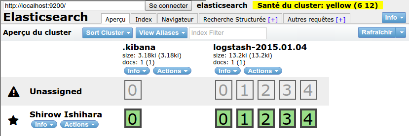
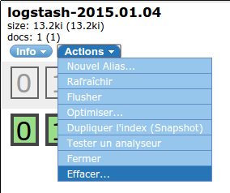
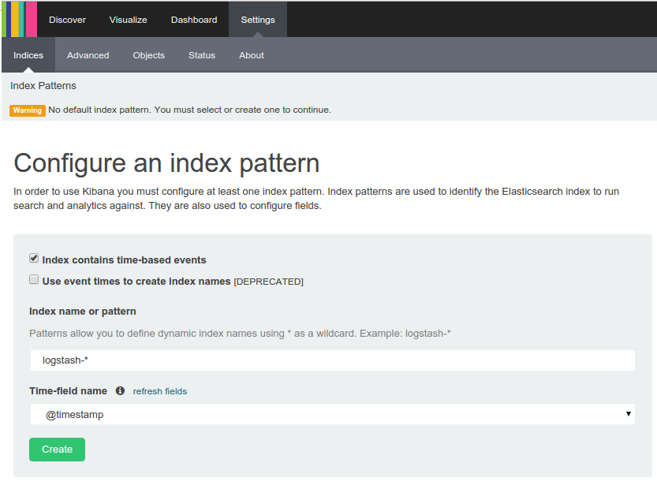
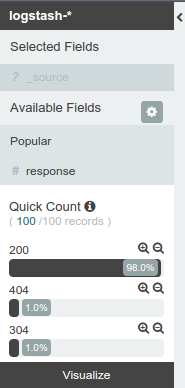
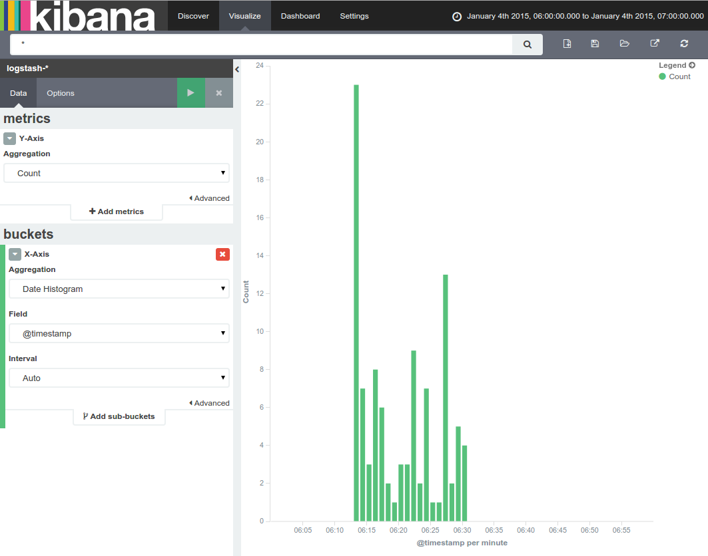
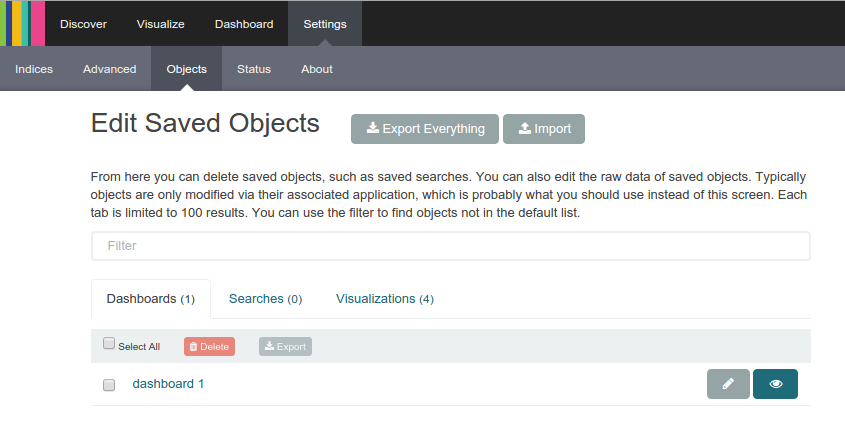
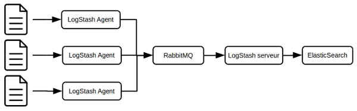
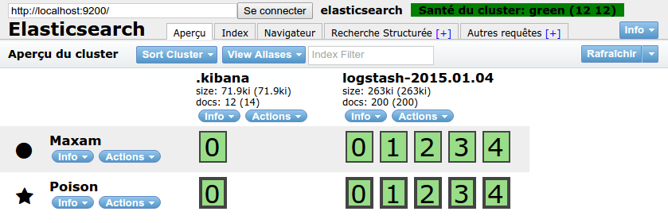

Hands On : LogStash, ElasticSearch, Kibana, et plus encore
Ce tutoriel détaillera pas à pas :
- L'installation locale de LogStash, ElasticSearch et Kibana
- Le traitement de fichiers de logs par LogStash
- L'indexation dans ElasticSearch
- L'exploitation des données via Kibana
- Et pour aller plus loin : l'utilisation d'un broker de messages et d'agents distants et la mise en cluster d'ElasticSearch
Démarrage de la machine virtuelle
- Téléchargez VirtualBox pour votre système à cette adresse : https://www.virtualbox.org/wiki/Downloads
- Exécutez l'installeur en conservant les paramètres par défaut.
- Téléchargez la machine virtuelle de l'atelier à cette adresse (fichier de 2 Go).
- Le type de fichier devrait déjà être reconnu par le système comme associé à VirtualBox. Double-cliquez sur le fichier pour lancer la VM.
-
Le nom d'utilisateur est
elk. Le mot de passe estelk. - Dans le lanceur à gauche de la fenêtre se trouvent un raccourci vers Firefox, avec en favori toutes les URL utiles de ce tutoriel, et un raccourci vers le terminal pour lancer toutes les commandes nécessaires.
-
Tous les logiciels qui ne sont pas packagés ont été installés dans le dossier
/home/elk/atelier.
Étape 1 : LogStash
Dans cette étape, nous allons lire un fichier de logs avec LogStash, découper ces logs pour leur ajouter de la sémantique, et les faire écrire dans la sortie standard.
Pour commencer, nous allons avoir besoin de logs à lire. Pour cela, enregistrer dans /home/elk/atelier ce fichier.
Créer ensuite dans /home/elk/atelier un fichier nommé logstash.conf. L'éditer avec l'éditeur de texte de votre choix, et y placer le code suivant en remplaçant /home/elk/atelier par sa valeur (par exemple /home/cvillard/elk) :
# C'est un commentaire
input {
# On définit ici les sources de données à traiter
file {
path => "/home/elk/atelier/logstash-tutorial-small.log"
start_position => beginning
}
}
output {
# on définit ici les destinations pour les données traitées
stdout {
# Sortie standard : pas de paramètres
}
}
Attention
Pour ceux qui n'utilisent pas la machine virtuelle, le chemin indiqué dans le paramètre path => ... doit être adapté, ainsi que dans tous les exemples de configuration indiqués dans la suite du tutoriel.
Démarrer LogStash en lui indiquant le fichier de configuration :
$ /home/elk/atelier/logstash-2.1.0/bin/logstash agent -f '/home/elk/atelier/logstash.conf' Settings: Default filter workers: 2 Logstash startup completed 2015-11-28T15:34:10.995Z claire-i5 83.149.9.216 - - [04/Jan/2015:05:13:42 +0000] "GET /presentations/logstash-monitorama-2013/images/kibana-search.png HTTP/1.1" 200 203023 "http://semicomplete.com/presentations/logstash-monitorama-2013/" "Mozilla/5.0 (Macintosh; Intel Mac OS X 10_9_1) AppleWebKit/537.36 (KHTML, like Gecko) Chrome/32.0.1700.77 Safari/537.36"Vous devriez voir s'afficher dans la console le contenu du fichier, la ligne étant précédée d'un timestamp et du nom de votre PC ajoutés automatiquement par LogStash (
2015-11-28T15:34:10.995Z claire-i5 dans mon exemple).
Interrompre LogStash avec Ctrl+C :
^CSIGINT received. Shutting down the pipeline. {:level=>:warn}
Logstash shutdown completed
Nous avons donc lu un fichier avec LogStash et l'avons recopié sur la sortie standard. C'est un bon début, mais ce n'est pas suffisant. Nous allons maintenant modifier la configuration pour découper chaque ligne lue dans le fichier en un message JSON contenant des champs nommés. Cela permettra d'ajouter de la sémantique à chaque ligne, et ensuite de faire des recherches une fois dans ElasticSearch.
Pour éviter de relire des lignes déjà lues en cas de redémarrage de LogStash, celui-ci stocke sur le disque l'endroit où il se trouve dans les fichiers qu'il lit. Par défaut, il crée des fichiers .sincedb_* dans le $HOME de l'utilisateur qui le lance.
Ainsi, pour faire relire à LogStash un fichier déjà lu, il faut enlever la ligne contenant l'inode de ce fichier dans le fichier .sincedb_* correspondant (ou supprimer le fichier entier).
Il est également possible de paramétrer l'endroit où LogStash écrit ses informations et le nom du fichier correspondant pour éviter de polluer le dossier home et rendre le nom plus explicite que .sincedb_1bd0462c651e913184f7efa9f40f84c6 :
input {
# On définit ici les sources de données à traiter
file {
path => "/home/elk/atelier/logstash-tutorial-small.log"
start_position => beginning
# on customise le sincedb_path et le nom du fichier
sincedb_path => "/home/elk/atelier/sincedb/sincedb_apache.log"
}
}
LogStash embarque des patterns pour traiter un grand nombre de formats de logs courants. C'est le cas pour les logs Apache traités ici.
Ouvrir le fichier logstash.conf créé précédemment et ajouter le bloc suivant entre le bloc input et le bloc output :
filter {
grok {
match => { "message" => "%{COMBINEDAPACHELOG}"}
}
}
Modifier l'output stdout pour qu'il écrive le message complet en JSON au lieu de le résumer :
output {
# on définit ici les destinations pour les données traitées
stdout {
codec => json
}
}
Supprimez le fichier .sincedb_* avec l'une des commandes suivantes, selon que vous ayez customisé le chemin de stockage du fichier :
$ rm -f /home/elk/atelier/sincedb/sincedb_apache.logOu si vous avez conservé les paramètres par défaut :
$ rm -f /home/elk/.sincedb_*
Redémarrez LogStash avec la même commande que précédemment.
$ /home/elk/atelier/logstash-2.1.0/bin/logstash agent -f '/home/elk/atelier/logstash.conf'
Settings: Default filter workers: 2
Logstash startup completed
{"message":"83.149.9.216 - - [04/Jan/2015:05:13:42 +0000] \"GET /presentations/logstash-monitorama-2013/images/kibana-search.png HTTP/1.1\" 200 203023 \"http://semicomplete.com/presentations/logstash-monitorama-2013/\" \"Mozilla/5.0 (Macintosh; Intel Mac OS X 10_9_1) AppleWebKit/537.36 (KHTML, like Gecko) Chrome/32.0.1700.77 Safari/537.36\"","@version":"1","@timestamp":"2015-11-28T16:10:15.811Z","host":"claire-i5","path":"/home/claire/Documents/atelier_es_mydir/logstash-tutorial-small.log","clientip":"83.149.9.216","ident":"-","auth":"-","timestamp":"04/Jan/2015:05:13:42 +0000","verb":"GET","request":"/presentations/logstash-monitorama-2013/images/kibana-search.png","httpversion":"1.1","response":"200","bytes":"203023","referrer":"\"http://semicomplete.com/presentations/logstash-monitorama-2013/\"","agent":"\"Mozilla/5.0 (Macintosh; Intel Mac OS X 10_9_1) AppleWebKit/537.36 (KHTML, like Gecko) Chrome/32.0.1700.77 Safari/537.36\""}
^CSIGINT received. Shutting down the pipeline. {:level=>:warn}
Logstash shutdown completed
Une fois mis en forme, on voit que la ligne de log a maintenant la forme suivante :
{
"message":"83.149.9.216 - - [04/Jan/2015:05:13:42 +0000] \"GET /presentations/logstash-monitorama-2013/images/kibana-search.png HTTP/1.1\" 200 203023 \"http://semicomplete.com/presentations/logstash-monitorama-2013/\" \"Mozilla/5.0 (Macintosh; Intel Mac OS X 10_9_1) AppleWebKit/537.36 (KHTML, like Gecko) Chrome/32.0.1700.77 Safari/537.36\"",
"@version":"1",
"@timestamp":"2015-11-28T16:10:15.811Z",
"host":"claire-i5",
"path":"/home/claire/Documents/atelier_es_mydir/logstash-tutorial-small.log",
"clientip":"83.149.9.216",
"ident":"-",
"auth":"-",
"timestamp":"04/Jan/2015:05:13:42 +0000",
"verb":"GET",
"request":"/presentations/logstash-monitorama-2013/images/kibana-search.png",
"httpversion":"1.1",
"response":"200",
"bytes":"203023",
"referrer":"\"http://semicomplete.com/presentations/logstash-monitorama-2013/\"",
"agent":"\"Mozilla/5.0 (Macintosh; Intel Mac OS X 10_9_1) AppleWebKit/537.36 (KHTML, like Gecko) Chrome/32.0.1700.77 Safari/537.36\""
}
Les différentes partie du log d'origine ont été découpées et placées dans des champs nommés. La ligne d'origine est elle conservée en l'état dans le champ message.
Qu'avons-nous fait ?
En ajoutant ce filtre, nous avons utilisé GROK. C'est un outil utilisant une syntaxe pouvant s'apparenter aux expressions régulières, et qui dans LogStash permet de découper un champ (message dans notre cas) en plusieurs champs nommés.
Par exemple, le pattern prédéfini que nous avons utilisé est défini par la syntaxe suivante :
COMBINEDAPACHELOG %{COMMONAPACHELOG} %{QS:referrer} %{QS:agent}
On voit qu'il fait lui-même référence à d'autres patterns : COMMONAPACHELOG et QS. La configuration complète donne :
WORD \b\w+\b
NOTSPACE \S+
BASE10NUM (?<![0-9.+-])(?>[+-]?(?:(?:[0-9]+(?:\.[0-9]+)?)|(?:\.[0-9]+)))
NUMBER (?:%{BASE10NUM})
INT (?:[+-]?(?:[0-9]+))
DATA .*?
MONTHDAY (?:(?:0[1-9])|(?:[12][0-9])|(?:3[01])|[1-9])
MONTH \b(?:Jan(?:uary)?|Feb(?:ruary)?|Mar(?:ch)?|Apr(?:il)?|May|Jun(?:e)?|Jul(?:y)?|Aug(?:ust)?|Sep(?:tember)?|Oct(?:ober)?|Nov(?:ember)?|Dec(?:ember)?)\b
YEAR (?>\d\d){1,2}
HOUR (?:2[0123]|[01]?[0-9])
MINUTE (?:[0-5][0-9])
# '60' is a leap second in most time standards and thus is valid.
SECOND (?:(?:[0-5][0-9]|60)(?:[:.,][0-9]+)?)
TIME (?!<[0-9])%{HOUR}:%{MINUTE}(?::%{SECOND})(?![0-9])
IPV6 ((([0-9A-Fa-f]{1,4}:){7}([0-9A-Fa-f]{1,4}|:))|(([0-9A-Fa-f]{1,4}:){6}(:[0-9A-Fa-f]{1,4}|((25[0-5]|2[0-4]\d|1\d\d|[1-9]?\d)(\.(25[0-5]|2[0-4]\d|1\d\d|[1-9]?\d)){3})|:))|(([0-9A-Fa-f]{1,4}:){5}(((:[0-9A-Fa-f]{1,4}){1,2})|:((25[0-5]|2[0-4]\d|1\d\d|[1-9]?\d)(\.(25[0-5]|2[0-4]\d|1\d\d|[1-9]?\d)){3})|:))|(([0-9A-Fa-f]{1,4}:){4}(((:[0-9A-Fa-f]{1,4}){1,3})|((:[0-9A-Fa-f]{1,4})?:((25[0-5]|2[0-4]\d|1\d\d|[1-9]?\d)(\.(25[0-5]|2[0-4]\d|1\d\d|[1-9]?\d)){3}))|:))|(([0-9A-Fa-f]{1,4}:){3}(((:[0-9A-Fa-f]{1,4}){1,4})|((:[0-9A-Fa-f]{1,4}){0,2}:((25[0-5]|2[0-4]\d|1\d\d|[1-9]?\d)(\.(25[0-5]|2[0-4]\d|1\d\d|[1-9]?\d)){3}))|:))|(([0-9A-Fa-f]{1,4}:){2}(((:[0-9A-Fa-f]{1,4}){1,5})|((:[0-9A-Fa-f]{1,4}){0,3}:((25[0-5]|2[0-4]\d|1\d\d|[1-9]?\d)(\.(25[0-5]|2[0-4]\d|1\d\d|[1-9]?\d)){3}))|:))|(([0-9A-Fa-f]{1,4}:){1}(((:[0-9A-Fa-f]{1,4}){1,6})|((:[0-9A-Fa-f]{1,4}){0,4}:((25[0-5]|2[0-4]\d|1\d\d|[1-9]?\d)(\.(25[0-5]|2[0-4]\d|1\d\d|[1-9]?\d)){3}))|:))|(:(((:[0-9A-Fa-f]{1,4}){1,7})|((:[0-9A-Fa-f]{1,4}){0,5}:((25[0-5]|2[0-4]\d|1\d\d|[1-9]?\d)(\.(25[0-5]|2[0-4]\d|1\d\d|[1-9]?\d)){3}))|:)))(%.+)?
IPV4 (?<![0-9])(?:(?:25[0-5]|2[0-4][0-9]|[0-1]?[0-9]{1,2})[.](?:25[0-5]|2[0-4][0-9]|[0-1]?[0-9]{1,2})[.](?:25[0-5]|2[0-4][0-9]|[0-1]?[0-9]{1,2})[.](?:25[0-5]|2[0-4][0-9]|[0-1]?[0-9]{1,2}))(?![0-9])
IP (?:%{IPV6}|%{IPV4})
HOSTNAME \b(?:[0-9A-Za-z][0-9A-Za-z-]{0,62})(?:\.(?:[0-9A-Za-z][0-9A-Za-z-]{0,62}))*(\.?|\b)
IPORHOST (?:%{HOSTNAME}|%{IP})
USERNAME [a-zA-Z0-9._-]+
USER %{USERNAME}
HTTPDATE %{MONTHDAY}/%{MONTH}/%{YEAR}:%{TIME} %{INT}
COMMONAPACHELOG %{IPORHOST:clientip} %{USER:ident} %{USER:auth} \[%{HTTPDATE:timestamp}\] "(?:%{WORD:verb} %{NOTSPACE:request}(?: HTTP/%{NUMBER:httpversion})?|%{DATA:rawrequest})" %{NUMBER:response} (?:%{NUMBER:bytes}|-)
QUOTEDSTRING (?>(?<!\\)(?>"(?>\\.|[^\\"]+)+"|""|(?>'(?>\\.|[^\\']+)+')|''|(?>`(?>\\.|[^\\`]+)+`)|``))
# QS n'est qu'un alias
QS %{QUOTEDSTRING}
COMBINEDAPACHELOG %{COMMONAPACHELOG} %{QS:referrer} %{QS:agent}
On est plutôt contents de ne pas avoir eu à l'écrire nous-même, et on comprend également pourquoi GROK est généralement, dans une configuration LogStash, le plus gros consommateur de temps d'exécution. Les améliorations de performances devront avant tout se porter sur l'optimisation des expressions GROK au cas d'usage.
La mise au point d'un pattern GROK "maison" (non embarqué par défaut), pour traiter un format de log non standard, peut donc s'avérer ardue. Pour aider à sa mise au point, il existe un outil en ligne très pratique : Grok Debugger. Il liste également l'ensemble des patterns embarqués dans LogStash.
L'extrait de configuration GROK mentionné au dessus contient la ligne suivante pour désigner le mois :
MONTH \b(?:Jan(?:uary)?|Feb(?:ruary)?|Mar(?:ch)?|Apr(?:il)?|May|Jun(?:e)?|Jul(?:y)?|Aug(?:ust)?|Sep(?:tember)?|Oct(?:ober)?|Nov(?:ember)?|Dec(?:ember)?)\bOn voit que les noms de mois sont en dur, et en anglais. On ne supporte que la version complète et la version abrégée.
De plus, le pattern de date "dd/MMM/YYYY:HH:mm:ss Z" utilisé juste après dans ce tutoriel dépend de la locale de la machine ou de celle précisée en paramètre du filtre date.
C'est pour ces 2 raisons qu'il faut éviter autant que possible les patterns de date contenant du texte pour les jours et les mois, au profit de leur écriture en chiffre qui elle n'est pas dépendante de la locale et n'est pas ambigüe.
L'ajout de sémantique à notre log a donc plutôt bien fonctionné. Il reste néanmoins une dernière anomalie au niveau du champ @timestamp. En effet, celui-ci est ajouté automatiquement par LogStash, et renseigné avec l'heure du moment où il a lu la ligne dans le fichier. Dans un cas comme ici où on relis des logs anciens, cette date n'a aucun intérêt : la date intéressante est celle contenue dans le log lui-même, soit le 4 janvier 2015 à 05:13:42 dans notre cas, et qui a été placée dans le champ timestamp (sans @) par le pattern GROK COMBINEDAPACHELOG. Nous allons donc utiliser le filtre date pour lire la valeur String du champ timestamp (sans @), la transformer en timestamp et la placer dans le champ @timestamp (avec @) en remplacement de la valeur automatique.
Pour cela, ouvrir le fichier logstash.conf, et ajouter un filtre après le GROK :
filter {
grok {
match => { "message" => "%{COMBINEDAPACHELOG}"}
}
date {
# exemple de date: 04/Jan/2015:05:13:42 +0000
match => [ "timestamp", "dd/MMM/YYYY:HH:mm:ss Z" ]
}
}
N'oubliez pas de supprimer le fichier .sincedb_* puis redémarrez LogStash avec la même commande que précédemment.
$ /home/elk/atelier/logstash-2.1.0/bin/logstash agent -f '/home/elk/atelier/logstash.conf'
Settings: Default filter workers: 2
Logstash startup completed
{"message":"83.149.9.216 - - [04/Jan/2015:05:13:42 +0000] \"GET /presentations/logstash-monitorama-2013/images/kibana-search.png HTTP/1.1\" 200 203023 \"http://semicomplete.com/presentations/logstash-monitorama-2013/\" \"Mozilla/5.0 (Macintosh; Intel Mac OS X 10_9_1) AppleWebKit/537.36 (KHTML, like Gecko) Chrome/32.0.1700.77 Safari/537.36\"","@version":"1","@timestamp":"2015-01-04T05:13:42.000Z","host":"claire-i5","path":"/home/claire/Documents/atelier_es_mydir/logstash-tutorial-small.log","clientip":"83.149.9.216","ident":"-","auth":"-","timestamp":"04/Jan/2015:05:13:42 +0000","verb":"GET","request":"/presentations/logstash-monitorama-2013/images/kibana-search.png","httpversion":"1.1","response":"200","bytes":"203023","referrer":"\"http://semicomplete.com/presentations/logstash-monitorama-2013/\"","agent":"\"Mozilla/5.0 (Macintosh; Intel Mac OS X 10_9_1) AppleWebKit/537.36 (KHTML, like Gecko) Chrome/32.0.1700.77 Safari/537.36\""}
^CSIGINT received. Shutting down the pipeline. {:level=>:warn}
Logstash shutdown completed
Si on compare les champs @timestamp et timestamp dans la sortie on a maintenant les valeurs suivantes :
"@timestamp":"2015-01-04T05:13:42.000Z",
"timestamp":"04/Jan/2015:05:13:42 +0000",
Les deux valeurs sont bien identiques, on pourra donc une fois dans ElasticSearch faire une recherche sur le champ standard @timestamp et avoir des résultats pertinents.
Afin d'améliorer l'exploitation future des logs, il peut également être intéressant de typer les champs numériques comme tels. Comme nous le verrons dans la suite de ce tutoriel, cela peut aider Elasticsearch lors de l'interprétation. Dans notre cas, nous avons 2 champs numériques : bytes et response.
Pour typer ces champs, ouvrir le fichier logstash.conf, et ajouter un filtre après le filtre date :
filter {
grok {
match => { "message" => "%{COMBINEDAPACHELOG}"}
}
date {
# exemple de date: 04/Jan/2015:05:13:42 +0000
match => [ "timestamp", "dd/MMM/YYYY:HH:mm:ss Z" ]
}
mutate {
convert => {
"bytes" => "integer"
"response" => "integer"
}
}
}
Attention
Un champ ne doit être typé directement dans LogStash que si aucune valeur invalide ne peut être présente en entrée. Si l'on n'est pas certain à 100% de cela, il ne faut pas typer le champ et laisser Logstash le traiter en tant que chaîne de caractères. En effet, si une valeur invalide se trouve dans un champ à convertir (par exemple, une lettre dans un champ à convertir en entier), LogStash émettra une erreur et cessera tout traitement sur ce message, qui ne sera jamais transmis en sortie et disparaîtra.
N'oubliez pas de supprimer le fichier .sincedb_* puis redémarrez LogStash avec la même commande que précédemment.
$ /home/elk/atelier/logstash-2.1.0/bin/logstash agent -f '/home/elk/atelier/logstash.conf'
Settings: Default filter workers: 2
Logstash startup completed
{"message":"83.149.9.216 - - [04/Jan/2015:05:13:42 +0000] \"GET /presentations/logstash-monitorama-2013/images/kibana-search.png HTTP/1.1\" 200 203023 \"http://semicomplete.com/presentations/logstash-monitorama-2013/\" \"Mozilla/5.0 (Macintosh; Intel Mac OS X 10_9_1) AppleWebKit/537.36 (KHTML, like Gecko) Chrome/32.0.1700.77 Safari/537.36\"","@version":"1","@timestamp":"2015-01-04T05:13:42.000Z","host":"claire-i5","path":"/home/claire/Documents/atelier_es_mydir/logstash-tutorial-small.log","clientip":"83.149.9.216","ident":"-","auth":"-","timestamp":"04/Jan/2015:05:13:42 +0000","verb":"GET","request":"/presentations/logstash-monitorama-2013/images/kibana-search.png","httpversion":"1.1","response":200,"bytes":203023,"referrer":"\"http://semicomplete.com/presentations/logstash-monitorama-2013/\"","agent":"\"Mozilla/5.0 (Macintosh; Intel Mac OS X 10_9_1) AppleWebKit/537.36 (KHTML, like Gecko) Chrome/32.0.1700.77 Safari/537.36\""}^CSIGINT received. Shutting down the pipeline. {:level=>:warn}
Logstash shutdown completed
On voit que les champs bytes et response sont maintenant des entiers : ils ne sont pas encadrés par des doubles quotes.
...,"response":200,"bytes":203023,...
En cas de soucis, voici le fichier logstash.conf obtenu à la fin de cette partie.
Étape 2 : ElasticSearch
Dans cette étape, nous allons utiliser le résultat de l'étape précédente pour indexer les logs découpés dans ElasticSearch et les rechercher sommairement via l'API REST d'ElasticSearch. Nous apprendrons également comme configurer sommairement ElasticSearch et comment le monitorer via un plugin.
Le fonctionnement d'ElasticSearch étant assez particulier, il est fortement conseillé de lire la page Concepts ElasticSearch de ce tutoriel avant de continuer !
Démarrer ElasticSearch avec la commande :
$ /home/elk/atelier/elasticsearch-2.1.0/bin/elasticsearchAu bout d'un instant, la trace suivante apparaît dans la console (
Kirigi étant le nom du nœud, il change à chaque démarrage) :
[2015-11-28 14:03:28,178][INFO ][node ] [Kirigi] startedContrôler alors à l'URL http://localhost:9200/ qu'ElasticSearch répond :
{
"name" : "Kirigi",
"cluster_name" : "elasticsearch",
"version" : {
"number" : "2.1.0",
"build_hash" : "72cd1f1a3eee09505e036106146dc1949dc5dc87",
"build_timestamp" : "2015-11-18T22:40:03Z",
"build_snapshot" : false,
"lucene_version" : "5.3.1"
},
"tagline" : "You Know, for Search"
}
Nous allons commencer par envoyer les logs à ElasticSearch depuis LogStash.
Pour cela, ouvrir le fichier logstash.conf et modifier le bloc output :
output {
elasticsearch {}
}
Comme nous faisons fonctionner LogStash et ElasticSearch sur la même machine et sans sécurité, les paramètres par défaut conviennent.
Supprimer le fichier .sincedb_* et redémarrer Logstash. Une fois la trace Logstash startup completed apparue, on observe du côté d'Elasticsearch 2 nouvelles traces :
[2015-12-06 18:25:04,575][INFO ][cluster.metadata ] [Shirow Ishihara] [logstash-2015.01.04] creating index, cause [auto(bulk api)], templates [logstash], shards [5]/[1], mappings [_default_, logs] [2015-12-06 18:25:05,342][INFO ][cluster.metadata ] [Shirow Ishihara] [logstash-2015.01.04] update_mapping [logs]Ces traces indiquent que des logs ont été envoyées à ElasticSearch par Logstash, et qu'ElasticSearch a créé un nouvel index nommé
logstash-2015.01.04 pour contenir ces données.
Nous allons utiliser l'API REST d'ElasticSearch pour consulter les données de ce nouvel index (donc, une seule ligne, ou un seul document selon la terminologie d'ElasticSearch, correspondant à notre log Apache).
Entrez dans votre navigateur l'URL suivante : http://localhost:9200/logstash-2015.01.04/_search. Le résultat devrait être (une fois mis en forme) :
{
"took":226,
"timed_out":false,
"_shards":{"total":5,"successful":5,"failed":0},
"hits":{
"total":1,
"max_score":1.0,
"hits":[
{
"_index":"logstash-2015.01.04",
"_type":"logs",
"_id":"AVF4U1CkEZ3y1kCGmOik",
"_score":1.0,
"_source":{
"message":"83.149.9.216 - - [04/Jan/2015:05:13:42 +0000] \"GET /presentations/logstash-monitorama-2013/images/kibana-search.png HTTP/1.1\" 200 203023 \"http://semicomplete.com/presentations/logstash-monitorama-2013/\" \"Mozilla/5.0 (Macintosh; Intel Mac OS X 10_9_1) AppleWebKit/537.36 (KHTML, like Gecko) Chrome/32.0.1700.77 Safari/537.36\"",
"@version":"1",
"@timestamp":"2015-01-04T05:13:42.000Z",
"host":"claire-i5",
"path":"/home/claire/Documents/atelier_es_mydir/logstash-tutorial-small.log",
"clientip":"83.149.9.216",
"ident":"-",
"auth":"-",
"timestamp":"04/Jan/2015:05:13:42 +0000",
"verb":"GET",
"request":"/presentations/logstash-monitorama-2013/images/kibana-search.png",
"httpversion":"1.1",
"response":200,
"bytes":203023,
"referrer":"\"http://semicomplete.com/presentations/logstash-monitorama-2013/\"",
"agent":"\"Mozilla/5.0 (Macintosh; Intel Mac OS X 10_9_1) AppleWebKit/537.36 (KHTML, like Gecko) Chrome/32.0.1700.77 Safari/537.36\""
}
}
]
}
}
Dans la réponse retournée, on voit que la donnée est de type logs :
... "_type":"logs", ...
Si on relit de nouveau les traces produites par ElasticSearch lors de la réception du log, on voit que la seconde mentionne ce type logs :
[2015-12-06 18:25:05,342][INFO ][cluster.metadata ] [Shirow Ishihara] [logstash-2015.01.04] update_mapping [logs]En effet, comme nous n'avons pas indiqué à ElasticSearch comment interpréter le type
logs, il a dû deviner, et a stocké le résultat de sa tentative dans un mapping.
Comme cela a une grande importance sur la qualité et l'efficacité des recherches faites sur les différents champs (on peut indiquer une plage de dates en critère de recherche, cela ne fonctionnera pas si le champ est une simple chaîne de caractères), il est intéressant de voir comment ElasticSearch a deviné. Pour cela, entrer l'URL suivante dans votre navigateur : http://localhost:9200/logstash-2015.01.04/_mapping/logs/.
Le résultat est assez verbeux, nous allons donc nous intéresser à certains champs, et notamment ceux qui ne sont pas de simples chaînes de caractères.
Tout d'abord, le champ @timestamp : http://localhost:9200/logstash-2015.01.04/_mapping/logs/field/@timestamp
{
"logstash-2015.01.04":{
"mappings":{
"logs":{
"@timestamp":{
"full_name":"@timestamp",
"mapping":{
"@timestamp":{
"type":"date",
"format":"strict_date_optional_time||epoch_millis"
}
}
}
}
}
}
}
Ce champ est standard dans LogStash, ElasticSearch l'a reconnu et lui a donc appliqué de lui même le type date avec au choix les 2 formats strict_date_optional_time et epoch_millis (les formats par défaut sont ici, sinon il est possible d'indiquer son propre format selon la syntaxe de la librairie JodaTime).
Prenons maintenant le champ bytes : http://localhost:9200/logstash-2015.01.04/_mapping/logs/field/bytes
{
"logstash-2015.01.04":{
"mappings":{
"logs":{
"bytes":{
"full_name":"bytes",
"mapping":{
"bytes":{
"type":"long"
}
}
}
}
}
}
}
Grâce au typage du champ en entier réalisé dans LogStash, ElasticSearch a décidé de traiter ce champ comme un entier, de type long. Nous pourrons donc directement faire des recherches concernant les logs dont le champ bytes est supérieur à 200 000 par exemple.
Si on observe le mapping complet, on trouve qu'ElasticSearch a mal deviné le type du champ timestamp : il le considère comme une string au lieu d'une date à un format particulier. Nous allons donc devoir indiquer à ElasticSearch la manière dont il devra être interprété via un template (voir l'explication du concept).
Il n'est pas possible de corriger un mapping Elasticsearch sans ré-indexer les données. Comme dans notre cas nous n'avons qu'une seule donnée, nous allons supprimer l'index, et le document et le mapping deviné avec lui, pour pouvoir le reconfigurer proprement et soumettre de nouveau notre ligne de log pour indexation.
Deux solutions existent pour supprimer un index. La première est l'installation d'un plugin de monitoring standard d'ElasticSearch, très utile pour consulter rapidement la santé de son cluster, le nombre et le contenu des index ainsi que tout le paramétrage du cluster ou des nœuds : Head.
La seconde solution pour supprimer un index dans ElasticSearch est la ligne de commande si on dispose du programme cURL installé :
$ curl -XDELETE "http://localhost:9200/logstash-2015.01.04/"
{"acknowledged":true}
Nous allons donc nous servir de Head pour supprimer notre index mal configuré.
Accédez à l'URL suivante : http://localhost:9200/_plugin/head/ 
On trouve sur le premier onglet les index (.kibana, qui n'existe que si vous avez déjà lancé Kibana, et notre index logstash-2015.01.04) et la répartition des shards (les boites vertes numérotées) entre les nœuds du cluster (un seul pour nous, nommé Shirow Ishihara sur la capture). Comme par défaut ElasticSearch essaye de répliquer les données une fois sur un second nœud qui n'existe pas dans notre configuration, ils apparaissent Unassigned, non assignés. Cela explique la santé du cluster qui vaut yellow (une partie des répliques est non assignée). Elle serait green si toutes les répliques étaient assignées à des nœuds, et red si certaines données primaires étaient en cours de récupération (après un redémarrage de notre unique nœud par exemple).
Le second onglet "Index" permet de lister les index.
L'onglet "Navigateur" permet de consulter les données en choisissant des critères de filtres dans la colonne gauche.
Les onglets "Recherche structurée" et "Autres requêtes" permettent de faire des requêtes complexes sur le cluster.
Depuis l'onglet "Aperçu", cliquer sur le bouton "Action" sous le nom de l'index logstash-2015.01.04 et choisir "Effacer...".

Entrer le texte "SUPPRIMER" dans la pop-up puis cliquer sur OK pour confirmer. Une nouvelle pop-up devrait indiquer {"acknowledged":true} quasiment instantanément, et l'index disparaître de l'écran après avoir cliqué sur OK.
Nous pouvons maintenant indiquer à ElasticSearch comment interpréter les futures données de type logs que nous allons lui envoyer. Pour cela, nous allons rédiger un template. C'est un élément de configuration qui contient, pour un type donné, quels champs il contient et comment les interpréter. Ce template sera automatiquement transformé en mapping lors de la création d'un index dont le nom correspondra au champ d'action du template.
Pour faire cela, le programme cURL est le plus pratique.
Taper la commande suivante (attention aux sauts de lignes intempestifs !) :
curl -XPUT "http://localhost:9200/_template/logs_template" -d '
{
"template" : "logstash-*",
"mappings" : {
"logs" : {
"properties" : {
"timestamp" : { "type" : "date", "format" : "dd/MMM/YYYY:HH:mm:ss Z" }
}
}
}
}'
{"acknowledged":true}
Ensuite, supprimer le fichier .sincedb_* et redémarrer LogStash.
Rafraîchir la page de Head jusqu'à voir apparaître l'index avec le même nom que précédemment.
Vérifier le type du champ timestamp avec l'URL suivante : http://localhost:9200/logstash-2015.01.04/_mapping/logs/field/bytes. On voit qu'il est bien considéré comme une date avec le format indiqué.
{
"logstash-2015.01.04":{
"mappings":{
"logs":{
"timestamp":{
"full_name":"timestamp",
"mapping":{
"timestamp":{
"type":"date",
"format":"dd/MMM/YYYY:HH:mm:ss Z"
}
}
}
}
}
}
}
Nous avons vu comment paramétrer l'indexation d'ElasticSearch, et comment gérer son contenu via Head. Pour préparer l'étape suivante avec Kibana, nous allons maintenant lui faire indexer une volumétrie plus importante de données.
Pour cela, enregistrer le fichier suivant sur votre disque.
Ouvrir le fichier logstash.conf et modifier le début pour lire le nouveau fichier au lieu de l'ancien.
input {
# On définit ici les sources de données à traiter
file {
path => "/home/elk/atelier/logstash-tutorial-dataset.log"
start_position => beginning
# on customise le sincedb_path et le nom du fichier
sincedb_path => "/home/elk/atelier/sincedb/sincedb_apache.log"
}
}
Supprimer l'index dans ElasticSearch via Head ou cURL.
Supprimer le fichier .sincedb_* et redémarrer LogStash.
Rafraîchir la page de Head jusqu'à voir réapparaître l'index. Il doit contenir maintenant 100 documents et non plus 1 seul.

Étape 3 : Kibana
Dans cette étape, nous allons voir comment Kibana permet de rechercher facilement dans ElasticSearch, et nous créerons un dashboard.
Si Kibana est arrêté, lancez le avec la commande :
$ /home/elk/atelier/kibana-4.3.0-linux-x64/bin/kibanaUne fois la trace suivante obtenue dans la console :
log [14:11:46.405] [info][listening] Server running at http://0.0.0.0:5601Vérifier que Kibana répond à l'URL http://localhost:5601/.
Au premier lancement de Kibana, il nous demande quelques éléments de configuration de manière à savoir quelles données contenues dans ElasticSearch il va devoir traiter.
Attention
Si votre cluster ElasticSearch contient un grand nombre de templates utilisés dans tous vos index (plus de 50 templates et plus de 40 index par exemple) et que sur vos nœuds la Heap disponible pour ElasticSearch est plutôt faible : l'affichage de cet écran déclenche un parsing dans Elasticsearch de tous les mappings de tous les index. Cette requête peut utiliser jusqu'à 2Go de mémoire dans ElasticSearch avec ~2000 mappings, et provoquer la mort du cluster si la mémoire disponible est insuffisante ! Cette anomalie est en cours de correction côté ElasticSearch comme côté Kibana...
Nous souhaitons traiter des données basées sur le temps (time-based events), situés dans des index (un seul index en fait) dont le nom commence par logstash-* et dont le champ normalisé contenant le timestamp est @timestamp (rappelez vous précédemment, nous avions configuré tout le nécessaire dans Logstash pour que ce champ soit correctement positionné).
Remplissez les champs de l'écran de configuration de la manière suivante : 
Cliquez ensuite sur Create.
Un second écran nous affiche la configuration dans ElasticSearch de tous les champs connus dans les index correspondant au pattern logstash-* configuré précédemment. Il est possible de changer l'affichage des champs dans les dashboards pour une meilleure lisibilité en cliquant sur le petit icône en forme de stylo en face de chaque ligne. Nous allons pour notre part garder la configuration par défaut des champs.
Outre la configuration des index à scruter que nous avons déjà ajustée, Kibana offre de nombreuses options de configuration via les écrans de Settings. L'avertissement sur la page Advanced est clair : Caution: You can break stuff here. Nous allons donc conserver les paramètres par défaut.
Cliquez sur le menu Discover pour commencer à parcourir les données.
Pour l'instant, il ne trouve aucun résultat car par défaut il cherche des données datées des dernières 15 minutes et nos données de test datent du 04 janvier 2015.
Pour changer cela et voir nos données, cliquer sur l'icône en forme de pendule en haut à droite de l'écran, sur le menu Absolute en choisir en date de début 2015-01-04 06:00:00.000 et en date de fin 2015-01-04 07:00:00.000.

Cliquer sur Go.
Cette fois, nous avons enfin des données ! Kibana nous affiche par défaut, la répartition des valeurs de @timestamp par minute sur la plage de dates sélectionnée. Cela peut déjà être très utile pour monitorer l'activité d'un site Web, puisque nos données de test sont des logs Apache.
La barre de recherche en haut de l'écran contient par défaut le texte *, qui signifie "tous les documents".
Pour affiner cette recherche, il est possible de rechercher un mot ou un ensemble de mots.
Entrez *.html et validez pour ne voir que les logs faisant référence à l'accès à des ressources HTML.
Vous pouvez tester d'autres recherches, sur les codes retour ou le contenu des URL par exemple.
Nous voulons maintenant rechercher tous les logs venant d'un client dont l'IP commence par 86.1.
Entrez donc 86.1 dans le champ de recherche et validez : Aucun résultat ?!
Essayons alors de préciser le champ sur lequel nous voulons rechercher. Il s'agit du champ clientip.
Entrez donc clientip:86.1 et validez... Pas mieux :(
C'est en fait ici que les paramètres d'indexation définis dans le template Elasticsearch à l'étape précédente entrent en jeu. Nous n'avons pas configuré explicitement ce champ, ElasticSearch a donc fait des déductions pour déterminer son format et la manière de l'indexer. Si nous demandons cette configuration à ElasticSearch via l'URL http://localhost:9200/logstash-2015.01.04/_mapping/logs/field/clientip nous avons le résultat suivant :
{
"logstash-2015.01.04": {
"mappings":{
"logs":{
"clientip":{
"full_name":"clientip",
"mapping":{
"clientip":{
"type":"string",
"norms":{
"enabled":false
},
"fielddata":{
"format":"disabled"
},
"fields":{
"raw":{
"type":"string",
"index":"not_analyzed",
"ignore_above":256
}
}
}
}
}
}
}
}
}
Les parties qui nous intéressent sont : "type":"string" et "index":"not_analyzed". Le champ est une chaîne de caractères et n'est pas analysé lors de l'indexation. Cela signifie qu'ElasticSearch va indexer la valeur exacte du champ, et lors de la recherche, si on ne lui précise pas que l'on recherche une partie seulement de cette valeur, il va chercher la valeur exacte. Ce qui explique que nous n'ayons aucun résultat avec notre recherche clientip:86.1.
Nous allons donc indiquer à ElasticSearch que la chaîne entrée doit correspondre au début de la valeur du champ, mais que le champ peut contenir d'autres caractères à la suite en ajoutant une étoile à la fin de la recherche.
Entrez la recherche : clientip:86.1* et validez.
Nous obtenons maintenant bien 3 résultats, correspondant à 3 requêtes faites depuis l'IP 86.1.76.62.
Dans la colonne à gauche de l'écran, Kibana affiche tous les champs disponible dans les données retournées par la recherche, ainsi qu'une répartition des valeurs de chaque champ. Ainsi, si on clique sur le champ response, on voit que 98% des requêtes ont retourné un code 200, 1% un code 404 et 1% un code 304...

L'affichage du tableau des résultats est pour l'instant un peu brut : il affiche uniquement le timestamp et le contenu brut du document tel que stocké dans ElasticSearch. Ce n'est pas très lisible, nous allons donc configurer Kibana pour afficher les informations les plus intéressantes.
Dans la colonne à gauche de l'écran pointer la souris sans cliquer sur le champ response et cliquer sur le petit bouton add qui s'affiche.
Répéter l'opération avec les champs clientip et request. Le tableau est déjà bien plus lisible !
A vous maintenant de sélectionner d'autres champs, d'en supprimer, de changer l'ordre des colonnes dans le tableau puis de trier le tableau selon l'une ou l'autre des colonnes. Essayez aussi de cliquer sur certaines zones du graphique pour voir leur effet...

Cliquez sur l'onglet Visualize.
Cet onglet permet de créer des graphiques à partir des données retournées par la recherche. Par exemple, nous pouvons reproduire le graphique du nombre de documents par minute vu sur la page précédente.
Configurer les options de graphique dans la colonne de gauche comme sur la capture d'écran ci-dessous et cliquer sur la flèche verte en haut pour afficher le graphique :
De nombreuses autres visualisations sont disponible, outre l'affichage en histogramme que nous avons vu. Pour les découvrir, cliquer sur l'icône à côté de la barre de recherche. Les autres icônes permettent également de sauvegarder une visualisation, d'en charger une sauvegardée précédemment et de les partager.
N'oubliez pas de sauvegarder 2 ou 3 visualisations pour pouvoir les utiliser dans la suite du tutoriel...
Cliquez sur l'onglet Dashboard
Il permet de configurer des tableaux de bords et de les sauvegarder.
Créez un nouveau Dashboard comme indiqué en choisissant différentes recherches et visualisations enregistrées précédemment, et observez comme il évolue en fonction des recherches que vous faites.
Un exemple d'un dashboard affichant la répartition des codes retour par valeur, la répartition des timestamp par minute et la répartition de la taille des réponses regroupées par 10k bytes :

Pour reproduire ce dashboard, vous pouvez télécharger le fichier d'export Kibana suivant.
Dans Kibana, cliquez sur le menu Settings puis Objects.
Cliquez sur le bouton Import, choisissez le fichier JSON que vous venez de télécharger. Validez. Vous devriez voir apparaître un dashboard nommé dashboard 1 dans la liste des dashboards, ainsi que 4 visualisations.

Rendez-vous ensuite dans l'onglet Dashboards. Cliquez sur le bouton Load saved dashboard. Choisissez le dashboard dashboard 1.
Les visualisations, et a fortiori les dashboards, utilisent une fonctionnalité d'ElasticSearch nommé Agrégations. Cela permet de réaliser en une seule requête, et en profitant des performances et de la distribution des recherches, d'obtenir à la fois les documents correspondant à la recherche et un certain nombre de valeurs calculées à partir du contenu de ces documents : nombre d'occurrence de chaque valeur différente, répartition des valeurs dans le temps, etc.
Cette fonctionnalité est très efficace et très pratique dans de nombreux cas, mais elle implique par contre une charge CPU importante sur le cluster ainsi que la mise en mémoire de nombreuses données. Si ce second point a été largement amélioré dans la version 2.*, la charge CPU reste importante et l'exécution simultanée par plusieurs utilisateurs d'agrégations complexes sur une grande volumétrie de documents (plusieurs centaines de milliers) peut ralentir globalement le cluster.
Pour aller plus loin...
Nous avons vu une infrastructure simple d'exploitation de logs. Elle souffre de nombreux points faibles : goulets d'étranglements de performances, vulnérabilité aux pannes, impact sur la charge des machines monitorées... Ces points peuvent être résolus par l'ajout de nouvelles briques et l'utilisation de clusters.
Utilisation d'un agent et d'un broker de messages
Deux problèmes principaux sont présents dans l'architecture telle que mise en place dans ce tutoriel : le traitement des messages avec Grok peut être très gourmand en CPU, et le fait de pousser directement dans ElasticSearch implique un couplage fort entre les deux briques.
Ces deux points peuvent être problématiques en production : La charge induite par LogStash peut perturber les applications supervisées, et toute indisponibilité d'ElasticSearch peut impacter le fonctionnement de l'agent.
Pour résoudre cela, il est préférable d'installer LogStash sur les machines supervisées avec une configuration minimale, qui ne fait que lire les fichiers de logs, gérer le multi-ligne si nécessaire, et pousser les messages dans la suite de l'infrastructure, elle située sur des machines dédiées. Le traitement poussé des messages (Grok notamment) sera réalisé par une ou plusieurs autres instances de LogStash (voir le paragraphe "Clustering" plus loin) sur ces machines dédiées, et se chargera de pousser dans ElasticSearch.
Parce qu'un petit schéma vaut souvent mieux qu'un long discours, l'architecture cible est donc la suivante : 
Pour communiquer entre le LogStash "agent" installé sur les machines clientes et le LogStash "serveur" réalisant les traitements, il faut insérer entre eux deux une brique intermédiaire de "broker de messages". Plusieurs technologies peuvent être utilisées pour cela : Redis, RabbitMQ, Apache Kafka... Chacune de ces solutions ont leurs avantages et leurs inconvénients, à adapter à chaque cas d'usage. RabbitMQ offrant une bonne simplicité de mise en œuvre et une interface d'administration pratiques dans le cadre de ce tutoriel, c'est ce que nous allons utiliser.
Dans cette partie, vous pouvez donc :
- Démarrer un serveur RabbitMQ sur votre poste via la commande (en
root) :# service rabbitmq-server start
- Activer l'interface graphique d'administration via la commande (en
root) :# rabbitmq-plugins enable rabbitmq_management The following plugins have been enabled: mochiweb webmachine rabbitmq_web_dispatch amqp_client rabbitmq_management_agent rabbitmq_management Applying plugin configuration to rabbit@claire-i5... started 6 plugins.
-
Accéder à l'interface à l'adresse http://localhost:15672/, se connecter avec le nom d'utilisateur
guestet le mot de passeguestet configurer un exchange, une queue et un routage dans RabbitMQ (voir plus haut l'explication de ces concepts) via les écrans dédiés à chaque concept.
On nomme l'exchangelogs-exchangeet on défini son type àdirect. On nomme la queuelogs-queue, et la clé de routage sera fixée àlogstash.


-
Séparer le fichier
logstash.confen 2 parties. La première jouera le rôle de l'agent, et contiendra la lecture du fichier de logs et la dépose dans RabbitMQ. La seconde jouera le rôle du serveur, et lira les messages depuis RabbitMQ et les déposer dans ElasticSearch comme précédemment.
Le LogStash agent déposera les logs grâce au plugin Output RabbitMQ, et le LogStash serveur les lira grâce au plugin Input RabbitMQ (malgré leur nom de plugins, ils sont inclus dans LogStash, aucune installation supplémentaire n'est nécessaire). - Démarrer les 2 instances de LogStash.
- Constater sur les logs arrivent dans ElasticSearch tout comme avant.
Clustering
Telle qu'elle, l'application n'est pas tolérante aux pannes : si ElasticSearch s'arrête, toute la chaîne devient indisponible. Pour un usage en production, la haute disponibilité, la tolérance aux pannes et la montée en charge par du scaling horizontal peuvent être nécessaires.
Comme nous l'avons vu, il est très facile de démarrer plusieurs instances de LogStash. Ainsi, il serait très facile d'installer LogStash sur 2 ou plus de machines, avec un fichier de configuration identique leur faisant lire la même file RabbitMQ et déposer dans le même ElasticSearch, pour dupliquer cette partie de l'infrastructure.
Réaliser la même chose au niveau d'ElasticSearch n'est guère plus complexe : il suffit de démarrer un second nœud avec le même nom de cluster que le premier et d'indiquer le premier nœud dans la liste des nœuds du cluster pour que le cluster se forme. En gardant la configuration par défaut qui crée 1 réplique de toutes les données et la répartition automatique des données entre les nœuds implémentée dans ElasticSearch, la haute disponibilité est à l'œuvre...
Dans cette partie, vous pouvez donc :
-
Démarrer un second noeud ElasticSearch en conservant les paramètres par défaut et en utilisant le même fichier de configuration :
/home/elk/atelier/elasticsearch-2.1.0/bin/elasticsearch - Observer le résultat dans l'IHM Head d'ElasticSearch : http://localhost:9200/

Quelques explications...
En conservant un fichier de configuration /home/elk/atelier/elasticsearch-2.1.0/config/elasticsearch.yml par défaut, à chaque démarrage ElasticSearch prend un nom de noeud au hasard, et le premier port disponible à partir de 9200 pour l'API HTTP et 9300 pour sa communication interne. Cela permet de démarrer rapidement, mais fonctionner avec des paramètres par défaut et faire fonctionner 2 noeuds sur la même machine est déconseillé en production : difficulté d'exploitation, perte de la tolérance aux pannes, mutualisation préjudiciable des ressources...